, 5 , 5 , 20 , 5 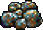, 5 , 5 , 5 , 4 , 4 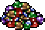, 4 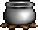, 4 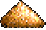, 5 , 5 , 6 , 6 , 6 , 6 , 5 , 5 , 10 , 10 , 10 , 10
, 5 , 5 , 20 , 5 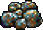, 5 , 5 , 5 , 4 , 4 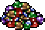, 4 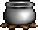, 4 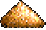, 5 , 5 , 6 , 6 , 6 , 6 , 5 , 5 , 10 , 10 , 10 , 10
В игре встречаются 4 типа городов: Farm - рыцарей, Plain - варваров, Forest -колдуний, Mountain - чародеев. Каждый город приносит в казну игрока 250 золотых в день. Первая и самая важная постройка в каждом городе-это замок. Потратив на это 5000 золотых, 20 дерева и 20 камня вы получаете мощные стены, стрелковую башню, а главное - возможность построить другие полезные здания. Некоторые здания одинаковы во всех замках, но все жилища монстров уникальны для каждой расы. Каждый замок приносит в казну игрока 1000 золотых ежедневно. Кроме того в замках вы можете нанимать новых героев, а для охраны замка может быть оставлен гарнизон.
| Вид | Назначение | Требования | Цена |
| 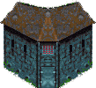 | Дает информацию о других игроках - чем больше гильдий, тем больше информации (4 гильдии открывают все строки ) | Замок | 750 , 5 |
| 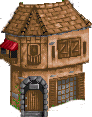 | Повышает мораль гарнизона замка на 1 единицу | Замок | 500 , 5 |
| 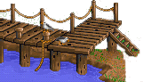 | Позволяет строить корабли | Выход к морю | 2000 , 20 |
| 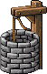 | Повышает прирост всех монстров в замке на 2 в неделю. Прирост единиц в замках с учетом колодца указан ниже в скобках. | Замок | 500 |
| 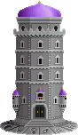 | Позволяет изучать магию 1 уровня | Замок | 2000 , 5 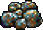, 5 |
| Позволяет изучать магию 2 уровня | Гильдия магов 1 уровня | 1000 , 5 , 5 , 4 , 4 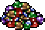, 4 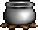, 4 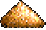 | |
| Позволяет изучать магию 3 уровня | Гильдия магов 2 уровня | 1000 , 5 , 5 , 6 , 6 , 6 , 6 | |
| Позволяет изучать магию 4 уровня | Гильдия Магов 3 уровня | 1000 , 5 , 5 , 10 , 10 , 10 , 10 |
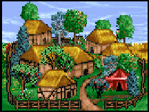 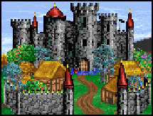
| Вид | Назначение | Требования | Цена |
| 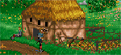 | Позволяет нанимать 12(14) мужиков в неделю | Замок | 200 |
| 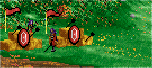 | Позволяет нанимать 8(10) лучников в неделю | Изба мужика | 1000 |
| 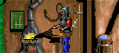 | Позволяет нанимать 7(9) пикинер в неделю | Изба мужика, Колодец | 1000 , 5 |
| 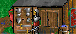 | Позволяет нанимать 6(8) мечников в неделю | Изба мужика, Таверна | 2000 , 10 , 10 |
| 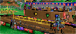 | Позволяет нанимать 5(7) всадников в неделю | Кузница, Оружейная | 4000 , 20 |
| 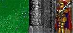 | Позволяет нанимать 4(6) паладинов в неделю | Кузница, Оружейная | 5000 , 20 , 20 |
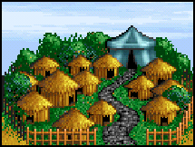 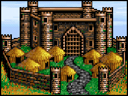
| Вид | Назначение | Требования | Цена |
| 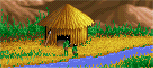 | Позволяет нанимать 10(12) гоблинов в неделю | Замок | 300 |
| 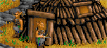 | Позволяет нанимать 8(10) орков в неделю | Хижина гоблинов | 800 , 5 |
| 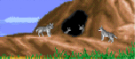 | Позволяет нанимать 6(8) волков в неделю | Хижина гоблинов | 1000 |
| 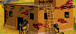 | Позволяет нанимать 4(6) огров в неделю | Хижина гоблинов | 2000 , 10 , 10 |
| 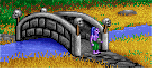 | Позволяет нанимать 3(5) троллей в неделю | Домик огров | 3000 , 20 |
| 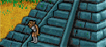 | Позволяет нанимать 2(4) циклопов в неделю | Мост | 6000 , 20 , 20 |
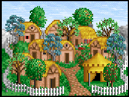 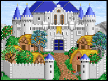
| Вид | Назначение | Требования | Цена |
| 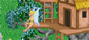 | Позволяет нанимать 8(10) фей в неделю | Замок | 500 , 5 |
| 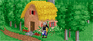 | Позволяет нанимать 6(8) гномов в неделю | Дом на деревьях,Таверна | 1000 , 5 |
| 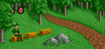 | Позволяет нанимать 4(6) Эльфов в неделю | Дом на деревьях | 1500 |
| 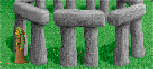 | Позволяет нанимать 3(5) друидов в неделю | Дом на деревьях, гильдия магов | 2500 , 10 , 10 |
| 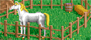 | Позволяет нанимать 2(4) единорогов в неделю | Стоунхендж | 4000 , 10 , 10 |
| 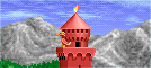 | Позволяет нанимать 1(3) фениксов в неделю | Лужайка единорогов | 10000 , 30 , 10 |
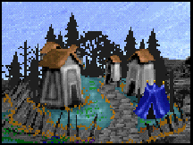 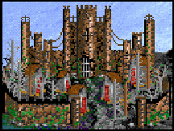
| Вид | Назначение | Требования | Цена |
| 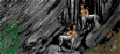 | Позволяет нанимать 8(10) кентавров в неделю | Замок | 500 |
| 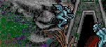 | Позволяет нанимать 6(8) горгулий в неделю | Пещера кентавров | 1000 , 10 |
| 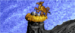 | Позволяет нанимать 4(6) грифонов в неделю | Пещера кентавров | 2000 |
| 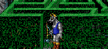 | Позволяет нанимать 3(5) минотавров в неделю | Гнездо горгулий | 3000 , 10 |
| 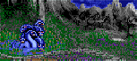 | Позволяет нанимать 2(4) гидр в неделю | Гнездо грифонов | 4000 , 10 |
| Позволяет нанимать 1(3) драконов в неделю | Лабиринт, грязь | 15000 , 30 , 20 |